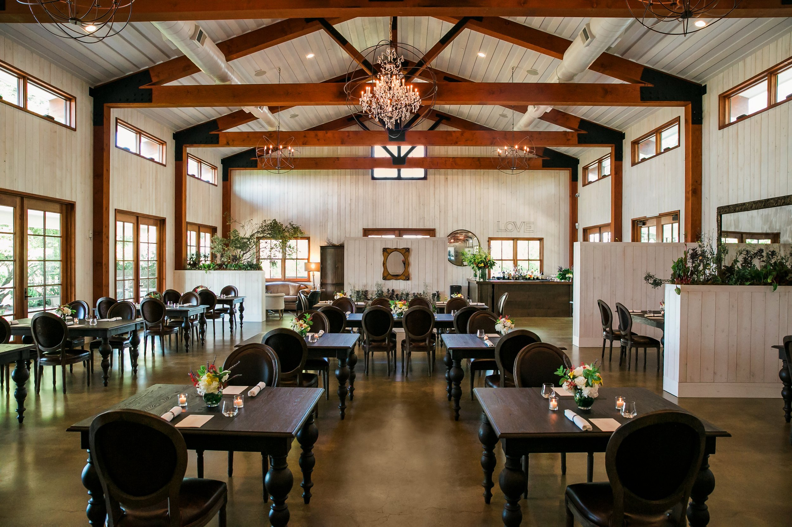
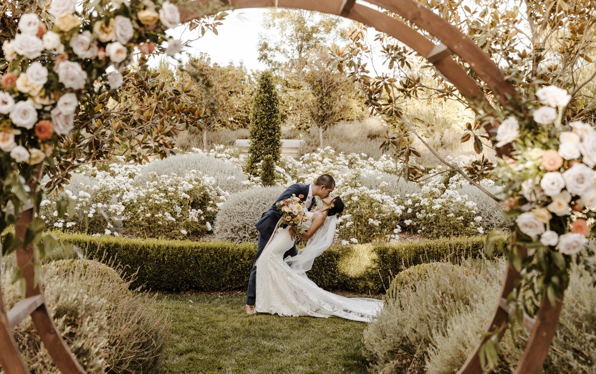
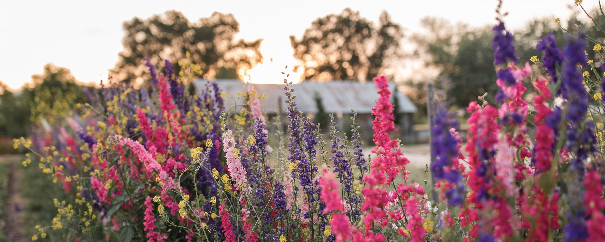
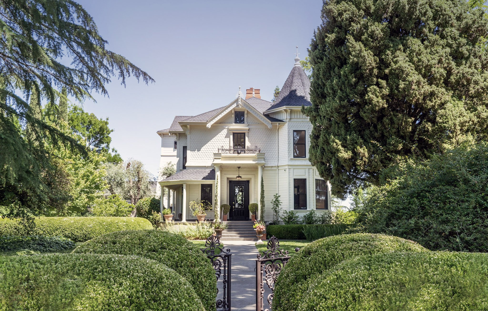
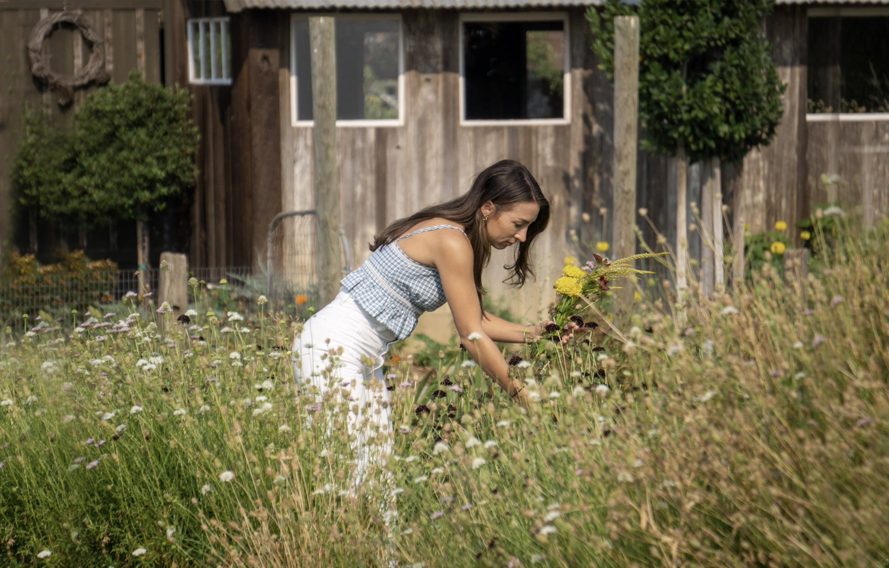
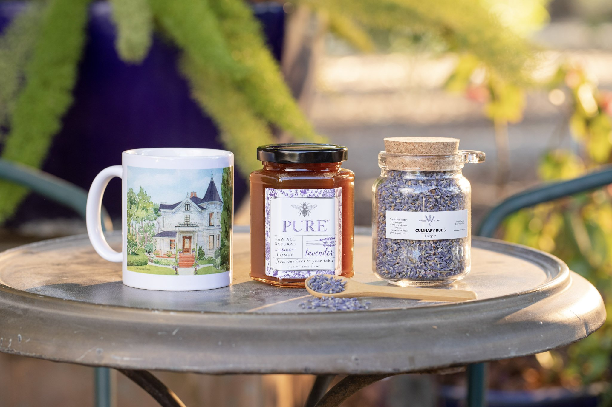

Our one-of-a-kind estate features dreamy gardens, a historical inn, an elegant white barn and two rustic barns, a chic pool and hot tub, a quaint organic farm, and sweeping views of the countryside. Yin Ranch serves as an award-winning Northern California wedding event venue, a luxurious bed and breakfast and offers day-visitors unique experiences.

Discover the unparalleled dining experiences at Yin Ranch, where farm-to-table cuisine meets exquisite seasonal settings. Our culinary offerings reflect the beauty and bounty of the Yolo Countryside.

As a premiere wedding venue in Northern California, we specialize in making your fairytale wedding a reality. The beautiful grounds of the estate are a unique canvas, ready to be your dream venue.

A naturally inspiring setting, the Yin Ranch Flower Farm invites guests to linger and weave memories into every celebration and experience — from our new venue settings to our Flower Farm Pavilion and Farm Bites.

Our lovingly restored 1865 farm house, with four luxurious guest suites, is ideal for a romantic getaway, anniversary, honey or babymoon.

We offer a variety of day visit experiences year-round including Garden and Flower Farm Tours, Pick Your Own Fresh or Dried Bouquet and creative workshops and classes led by local makers and purveyors.

Our Marketplace is a retail experience and platform for boutique makers dedicated to offering goods made by real people, with love.